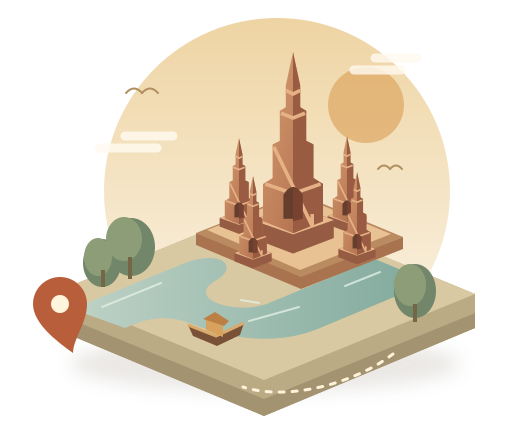

PHRA NAKHON SI AYUTTHAYAออกเที่ยวกรุงเก่า
ออกเที่ยวกรุงเก่า
เก็บเรื่องราวใหม่
ไปกับ Silvora
ออกเดินทางผ่าน 3 ภารกิจสนุก
สะสมแสตมป์ แล้วพาของขวัญกลับบ้าน
14°21′ N 100°34′ E

01
เสน่ห์เมืองเก่า ริมสายน้ำAYUTTHAYA, THAILAND
เที่ยวเมืองเก่า สะสมแสตมป์ ลุ้นของขวัญ
YOUR AYUTTHAYA PASSPORT
พาสปอร์ตเที่ยวกรุงเก่า
YOUR LITTLE ADVENTURE
แตะจุดไหนก่อนก็ได้ • เล่นผ่านแล้วรับแสตมป์3 จุดแวะ เก็บความประทับใจ
ครบ 3 ดวง เปิดกล่องเลย!
ขนม · ลูกอม · สติ๊กเกอร์
สุ่มรับ 1 อย่าง แล้วรับของได้ที่บูธเลย